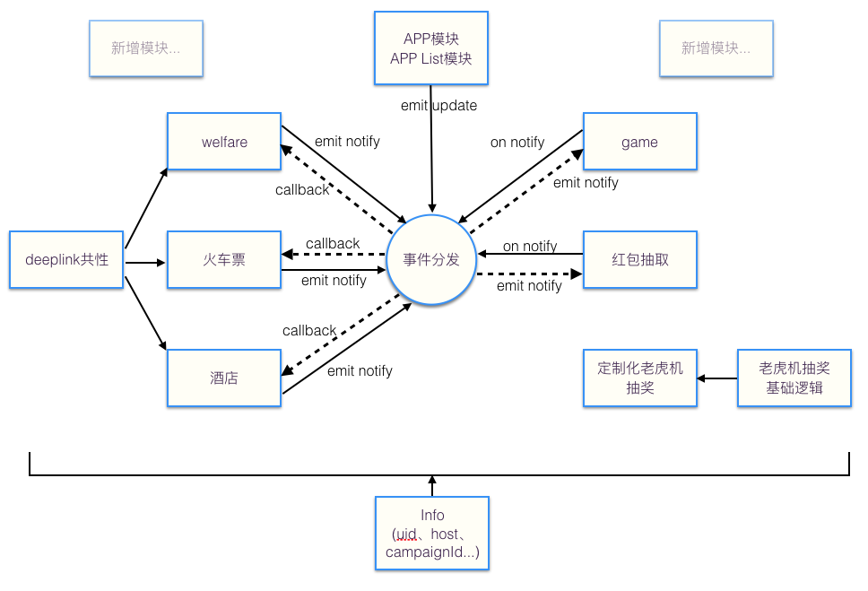
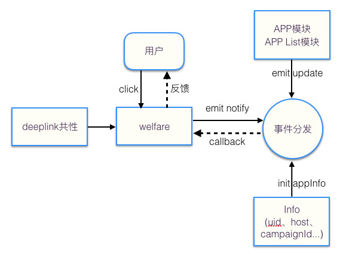
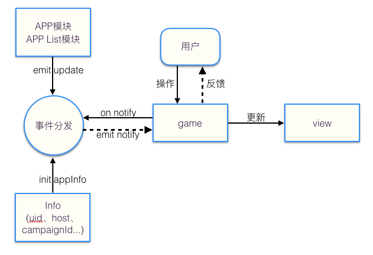

dispense采用事件模式，负责模块间交互

主动emit notify类型事件，用于主动获取数据，适用于对app下载安装进度感知低的模块，例如：其它福利、火车票购买、酒店预定等deeplink类型模块，这些模块只在点击的时候，根据app下载安装进度，实现不同的逻辑处理。

监听notify类型事件，用于被动获取数据，适用于对app下载安装进度感知高的模块，例如：游戏模块、红包领取等，这些模块需要根据app下载安装进度，实时调整展示与逻辑。

动态数据交互上面提及的app下载安装进度，其实就属于一种交互数据，由于模块需求较大，几乎都需要获取，所以进行了较大强度的封装。而不同的活动，会有自身定制话的数据交互需求（例如：免费抽奖有机会获取红包，下载安装完app有机会获取红包，那么红包相关的信息：个数之类的，就是需要不同模块交互的业务性数据）这些数据也是采用dispense进行交互的。
//业务常量模块中定义
const ADD_RED_PACKAGE_KEY = 'ADD_RED_PACKAGE_KEY';
//展示模块中监听红包个数，实时修改展示和动画
Emitter.on('notifyVal', function(p, v){
if(p == ADD_RED_PACKAGE_KEY){
//修改红包展示个数
}
});
//任务模块，完成任务并获取到红包的情况下，更新红包个数
Emitter.emit('updateVal', ADD_RED_PACKAGE_KEY, 1);
//部分模块，需要根据红包个数，做不同的操作处理，主动获取红包个数
Emitter.emit('notifyVal', function(v){
//do something
}, ADD_RED_PACKAGE_KEY);
{% endblock %}
{% block footer_extend %}
{% endblock %}